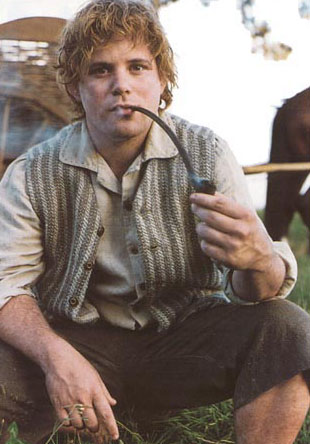

- 
- Name: Samwise Gamgee
- Born: April 6, TA 2980
- Died: Unknown, last seen leaving for the Undying Lands in FO 61
- Gender: Male
- Race: Hobbit
- Spouse: Rosie Cotton
- Titles: Mayor of the Shire
"I know we are going to take a very long road, into darkness; but I know
I can't turn back. It isn't to see Elves now, nor dragons, nor mountains,
that I want – I don't rightly know what I want: but I have something to do
before the end, and it lies ahead, not in the Shire."
—The Fellowship of the Ring, "A Shortcut to Mushrooms"
Samwise Gamgee, known as Sam, was a Hobbit of the Shire.
He was Frodo Baggins' gardener and best friend. Sam proved himself
to be Frodo's closest and most dependable companion, the most loyal
of the Fellowship of the Ring, and played a critical role in
protecting Frodo and destroying the One Ring.
Biography:
"The brave things in the old tales and songs, Mr. Frodo: adventures,
as I used to call them. I used to think that they were things the wonderful
folk of the stories went out and looked for, because they wanted them, because
they were exciting and life was a bit dull, a kind of a sport, as you might say.
But that’s not the way of it with the tales that really mattered, or the ones
that stay in the mind. Folk seem to have been just landed in them, usually –
their paths were laid that way, as you put it. But I expect they had lots of
chances, like us, of turning back, only they didn’t."
—The Two Towers, "The Stairs of Cirith Ungol"
Sam was the youngest son of Hamfast and Bell Gamgee,
and had many brothers and sisters. A gardener by trade,
Sam seemed to be a simple Hobbit of plain speech. However,
his love for Elves, his gift for poetry, and his belief that
the world contained greater wonders than most hobbits were aware
of (all nurtured by his tutor Bilbo Baggins) set him apart from the
beginning. It was Sam who first introduced (in Tolkien's novels) the
theme of the Elves sailing from Middle-earth, a subtle foreshadowing of
Bilbo and Frodo's final journey across the sea from the Grey Havens.
He lived with his father, Hamfast Gamgee, known commonly as
"The Gaffer", on Bagshot Row in the Shire, close to Bag End.
Sam's mother was Bell Goodchild. He had five siblings: Hamson,
Halfred, Daisy, May, and Marigold.